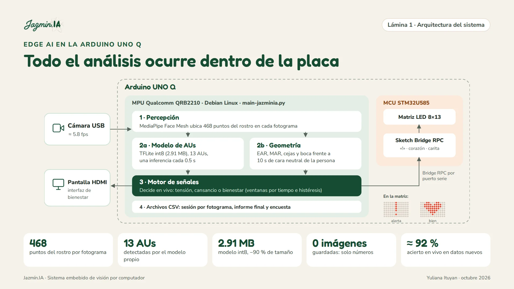
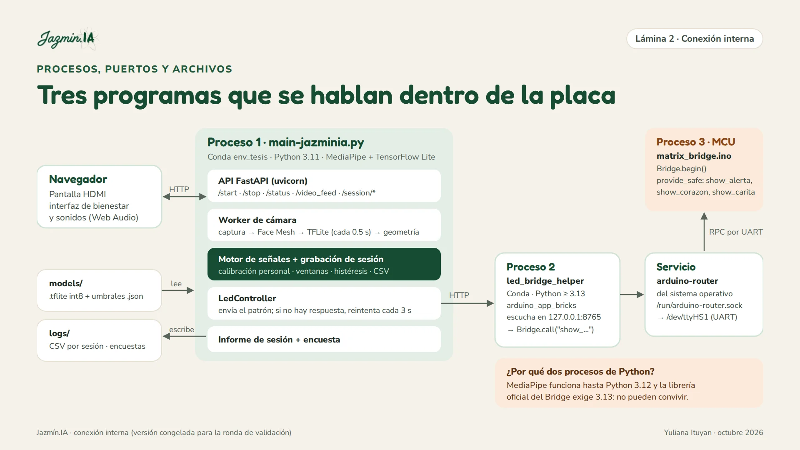
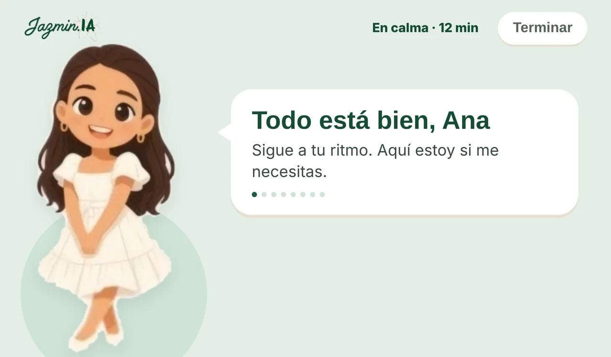
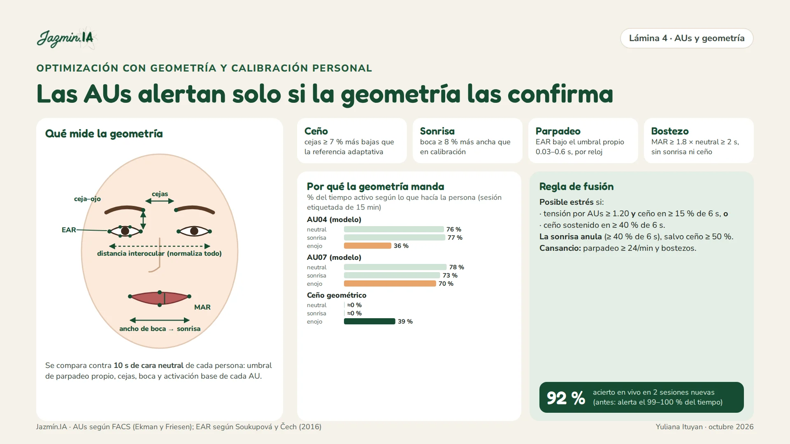
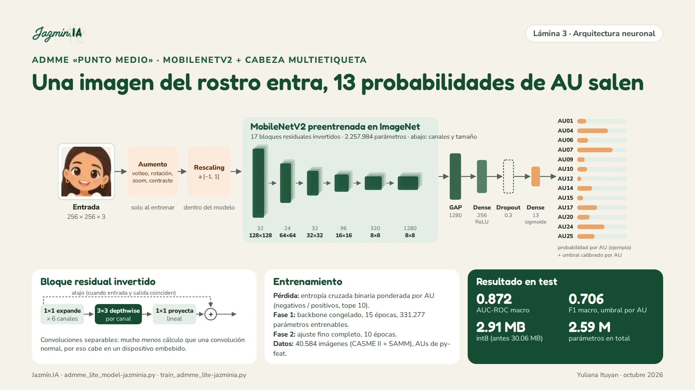
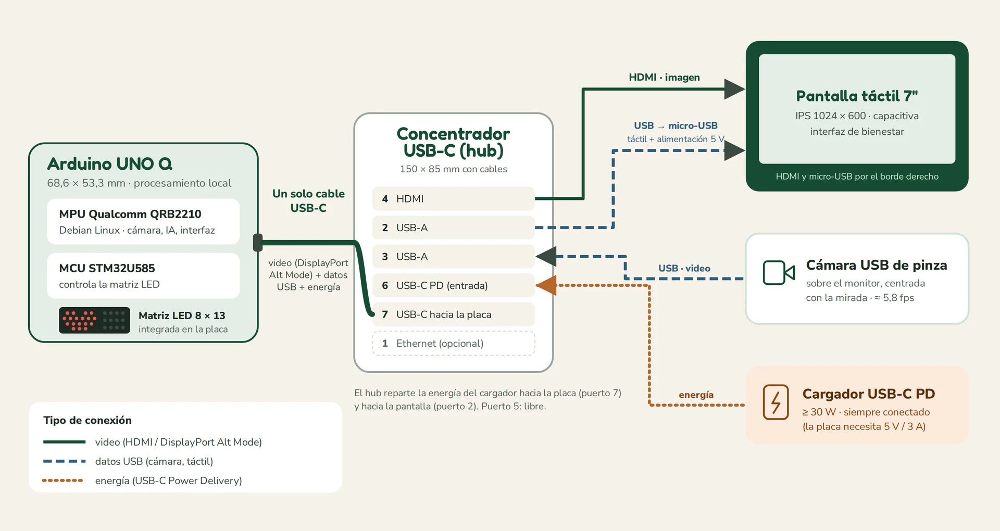

Observa tu rostro con una cámara, detecta en tiempo real señales de tensión y cansancio y te avisa con calma cuando conviene una pausa. Todo ocurre dentro de una Arduino UNO Q: sin nube, sin internet y sin guardar una sola imagen. It watches your face through a camera, detects signs of tension and tiredness in real time and gently tells you when a break would help. Everything runs inside an Arduino UNO Q: no cloud, no internet and not a single image stored.
Programar, estudiar o responder una evaluación exige atención sostenida. El tiempo de respuesta o la tasa de error miden el resultado, pero llegan tarde: no avisan cuando el cansancio o la tensión ya están afectando a la persona.Coding, studying or taking a test demands sustained attention. Response time or error rate measure the outcome, but they arrive too late: they don't warn you when tiredness or tension is already affecting you.
El ceño fruncido, el parpadeo frecuente o los bostezos son señales visibles de carga y fatiga, y se pueden medir sin tocar a la persona.A frown, frequent blinking or yawning are visible signs of load and fatigue, and they can be measured without touching the person.
La mayoría de sistemas de análisis facial corre en servidores: más costo, más latencia y tu cara viajando por internet.Most facial analysis systems run on servers: more cost, more latency and your face travelling across the internet.
Jazmín.IA no adivina emociones: describe movimientos del rostro (FACS) y te sugiere respirar o descansar. No es una herramienta clínica.Jazmín.IA doesn't guess emotions: it describes facial movements (FACS) and suggests breathing or resting. It is not a clinical tool.
Cada fotograma recorre seis pasos. Las imágenes se descartan apenas se procesan: solo quedan medidas numéricas.Every frame goes through six steps. Images are discarded as soon as they are processed: only numeric measurements remain.
Captura el rostro a ≈ 5,8 fotogramas por segundo.Captures the face at ≈ 5.8 frames per second.
Ubica 468 puntos del rostro en 3D.Locates 468 3D face landmarks.
EAR, MAR, cejas y boca; y una red que estima 13 AUs cada 0,5 s.EAR, MAR, brows and mouth; plus a network estimating 13 AUs every 0.5 s.
10 s de cara neutral: cada persona se compara consigo misma.10 s of neutral face: each person is compared with themselves.
Decide tensión, cansancio o bienestar con ventanas de tiempo e histéresis.Decides tension, tiredness or well-being with time windows and hysteresis.
Matriz LED, pantalla táctil con Jazmín e informe al terminar.LED matrix, touchscreen with Jazmín and an end-of-session report.


Elige un gesto. A la izquierda ves lo que mide el sistema; a la derecha, la pantalla real del modo producto y lo que muestra la matriz de LED de la placa.Pick a gesture. On the left you see what the system measures; on the right, the real product-mode screen and what the board's LED matrix shows.
La raya negra marca el umbral de cada medida. Valores ilustrativos.The black tick marks each measure's threshold. Illustrative values.

Al encender la placa arranca sola en pantalla completa. No hay imagen de la cámara ni números: Jazmín da las indicaciones y el color de fondo cambia con el estado. Desliza para ver el recorrido.When the board powers on it starts by itself in full screen. There is no camera image and no numbers: Jazmín gives the instructions and the background color changes with the state. Swipe to follow the flow (the interface itself is in Spanish).
Todas las medidas se dividen entre la distancia entre los ojos (no cambian si te acercas o te alejas) y se comparan con tus propios 10 segundos de cara neutral. Un umbral igual para todos no funcionó: con una persona, el 32 % de los fotogramas quedaba por debajo del umbral clásico de parpadeo con los ojos abiertos.Every measure is divided by the distance between the eyes (it doesn't change if you move closer or farther) and compared with your own 10 seconds of neutral face. A single threshold for everyone did not work: for one person, 32% of frames fell below the classic blink threshold with eyes open.
EAR bajo tu umbral personal entre 0,03 y 0,6 s, medido con el reloj.EAR below your personal threshold for 0.03–0.6 s, timed by the clock.
MAR ≥ 1,8 × tu neutral durante ≥ 2 s, sin sonrisa ni ceño.MAR ≥ 1.8 × your neutral for ≥ 2 s, with no smile or frown.
Cejas ≥ 7 % más bajas o juntas que la referencia adaptativa.Brows ≥ 7% lower or closer than the adaptive reference.
Boca ≥ 8 % más ancha que en la calibración.Mouth ≥ 8% wider than during calibration.
Solo cuenta lo que activas por encima de tu propio neutral. AU07 pesa más porque es la AU más asociada al estrés percibido (Blasberg et al., 2023).Only what you activate above your own neutral counts. AU07 weighs most because it is the AU most associated with perceived stress (Blasberg et al., 2023).

Una versión ligera de ADMME (Wang et al., 2023): en lugar de tres ramas con flujo óptico, una sola MobileNetV2 que trabaja sobre un fotograma y cabe en la placa.A lightweight take on ADMME (Wang et al., 2023): instead of three branches with optical flow, a single MobileNetV2 working on one frame that fits on the board.

Con la cámara real, AU04, AU07, AU17 y AU24 se activaban casi siempre y la AU12 (sonrisa) casi nunca: en 47 s sonriendo, 0 %. Los datos de laboratorio (microexpresiones, sin habla, cámaras de alta velocidad) están lejos de una persona que trabaja frente a una webcam. Por eso la decisión final se apoya en la geometría y el modelo actúa como apoyo.With the real camera, AU04, AU07, AU17 and AU24 fired almost always and AU12 (smile) almost never: 0% during 47 s of smiling. Lab data (micro-expressions, no speech, high-speed cameras) is far from a person working in front of a webcam. That's why the final decision relies on geometry, with the model as support.
Cámara, MediaPipe, TensorFlow Lite, motor de señales, grabación CSV e interfaz web con FastAPI.Camera, MediaPipe, TensorFlow Lite, signal engine, CSV logging and the FastAPI web interface.
Servidor HTTP mínimo en 127.0.0.1:8765 que traduce cada patrón a una llamada RPC con arduino_app_bricks.Tiny HTTP server on 127.0.0.1:8765 that turns each pattern into an RPC call with arduino_app_bricks.
Bridge.begin() y cuatro funciones: alerta «!», corazón, carita feliz y apagar.Bridge.begin() and four functions: "!" alert, heart, smiley and off.
MediaPipe funciona hasta Python 3.12 y la librería oficial del Bridge de Arduino exige 3.13: no pueden convivir. Se hablan por HTTP local, sin salir a ninguna red, y si la matriz falla el análisis sigue y la conexión se reintenta cada 3 s.MediaPipe works up to Python 3.12 and Arduino's official Bridge library requires 3.13: they can't share one interpreter. They talk over local HTTP without touching any network, and if the matrix fails the analysis keeps running and reconnects every 3 s.

Una maceta de escritorio de ≈ 200 × 125 × 70 mm que guarda la placa y el hub, deja ver la matriz LED por una ventana y sostiene la pantalla inclinada 15°, rodeada de pétalos. Diseñada en OpenSCAD para imprimirse en PETG.A ≈ 200 × 125 × 70 mm desk pot that holds the board and hub, shows the LED matrix through a window and holds the screen tilted 15°, surrounded by petals. Designed in OpenSCAD to be printed in PETG.
Los participantes hicieron expresiones guiadas mientras un supervisor las marcaba. Se compara, fotograma a fotograma, la etiqueta con la alerta que vio la persona en ese instante. Ninguna de estas sesiones se usó para ajustar umbrales.Participants made guided expressions while a supervisor labeled them. The label is compared, frame by frame, with the alert the person saw at that moment. None of these sessions were used to tune thresholds.
El 30 de septiembre el sistema alertaba el 99–100 % del tiempo y acertaba solo el 18 % en neutral. Tras el ajuste iterativo (prueba real → diagnóstico → replay → verificación), la validación con sesiones nuevas llegó a 92,5 % y 91,8 %.On 30 September the system alerted 99–100% of the time and was right only 18% of the time in neutral. After iterative tuning (real test → diagnosis → replay → check), validation on new sessions reached 92.5% and 91.8%.
Alerta encendida solo el 0,5 % del tiempo, 0 bostezos falsos y 18,4 parpadeos por minuto, dentro del rango normal en reposo.Alert on only 0.5% of the time, 0 false yawns and 18.4 blinks per minute, within the normal resting range.
En el piloto, el acierto medio fue 86 % en tez blanca (3), 70 % en trigueña (7) y 38 % en el único participante de tez muy morena, que además estaba bajo luz cenital. Es solo descriptivo y no permite concluir una causa, pero es una alerta seria: por eso el sistema ahora mide la luz en cada fotograma y las próximas pruebas usarán la escala de Monk.In the pilot, mean accuracy was 86% for light skin (3), 70% for medium skin (7) and 38% for the only very dark-skinned participant, who was also under overhead light. It is only descriptive and cannot establish a cause, but it is a serious warning: the system now measures lighting on every frame and the next tests will use the Monk scale.
Funciona sin internet; ningún dato viaja a la nube.Works offline; no data travels to the cloud.
Se guardan 23 medidas por fotograma, nunca imágenes ni video.23 measurements per frame are stored, never images or video.
Cada participante se identifica con un código; el nombre solo se muestra en pantalla.Each participant is a code; the name is only shown on screen.
Es un apoyo, no un diagnóstico ni una herramienta de vigilancia.It's a support tool, not a diagnosis or a surveillance tool.